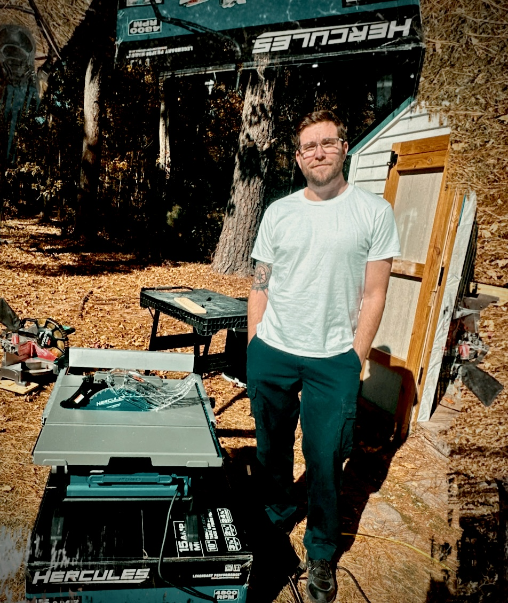
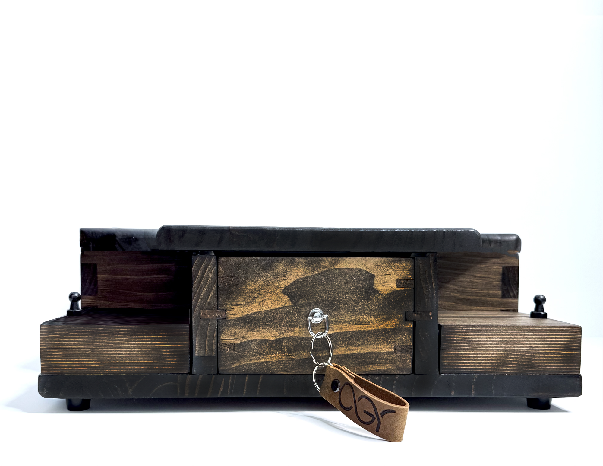

Woodworking & Creativity
Woodworking is PJ's favorite hobby because it provides peace, quiet, and the opportunity to create something with his own hands. Every project challenges him to learn new skills and improve his craftsmanship.
Woodworking Projects

Workshop Tools

Craftsmanship

Other Interests
Beyond woodworking, PJ enjoys watches, pop culture, sports, and learning about special effects makeup used in horror films.
Visit the family business website: One Good Reason